VOL. 01 — CONTENTS
本期目录
In this issue.

FIG. 02 — 示意图
01
风格库
十二种风格，开场先挑一种
P. 04
02
测量与导出
先量后画，文字始终可编辑
P. 07
03
质量门
十六条规则，错误清零才交付
P. 10
04
工作流
从大纲到成稿的四步
P. 13
ZIFEIYU PPT SKILL · VOL. 01
02 / 18
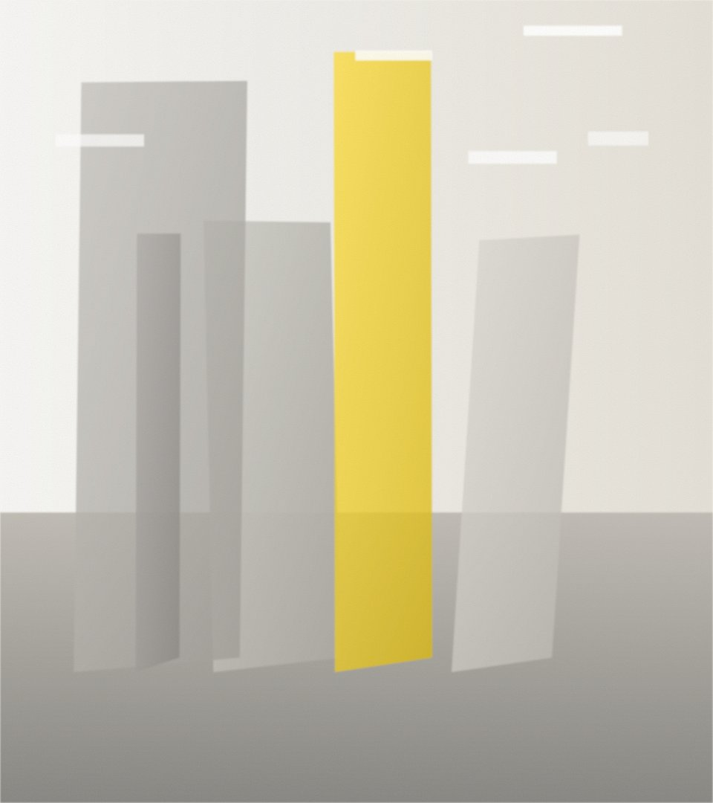
VOL. 01 — 2026 · ZIFEIYU PPT SKILL
网页 PPT · 可编辑导出
One source, every format.
浏览器里直接演示，再一键导出可编辑 PPTX、矢量 PDF 与逐页 PNG。
STYLE A — MAGAZINE · 1280 × 720
FIG. 01 — 示意图
VOL. 01 — CONTENTS
In this issue.
FIG. 02 — 示意图
01
十二种风格，开场先挑一种
P. 04
02
先量后画，文字始终可编辑
P. 07
03
十六条规则，错误清零才交付
P. 10
04
从大纲到成稿的四步
P. 13
ZIFEIYU PPT SKILL · VOL. 01
02 / 18
NOTE — 设计原则
“
One source of truth.
— SKILL.md · 设计原则
ZIFEIYU PPT SKILL · VOL. 01
03 / 18
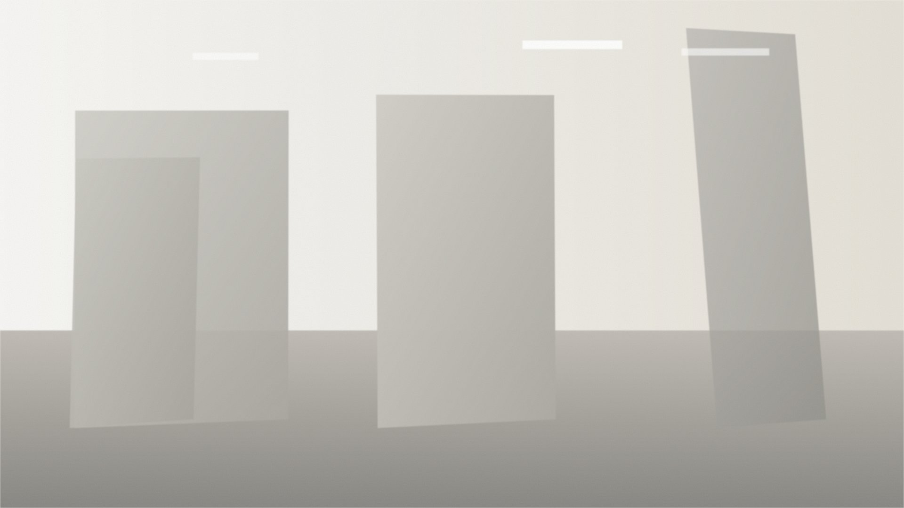
CHAPTER 01
01
Twelve ways to set a page.
FIG. 03 — 示意图
04 / 18
01 — STYLE INDEX
12
种风格
分五组：编辑排印、商务理性、舞台冲击、影像叙事、东方人文
A
杂志 · 暖纸
G
摄影集 · 画册
B
瑞士 · 网格
H
咨询 · 白皮书
C
发布会 · 暗场
I
日式 · 极简
D
报刊 · 版面
J
拼贴 · 手账
E
大字报 · 粗野
K
新中式 · 东方
F
柔和 · 产品
L
工程制图
Source — 风格库设计规格 2026-10-08 §2
05 / 18
01 — BEFORE / AFTER
Same content, new pages.
BEFORE
三套设计系统共用 L01–L24，换一个主题文件整套换色，版面结构始终一样。
24
个版式，三套系统共用
AFTER
十二种风格各有一套版式，按角色登记；校验与导出只认角色，不认风格。
12
种风格，各有一套版式
ZIFEIYU PPT SKILL · VOL. 01
06 / 18
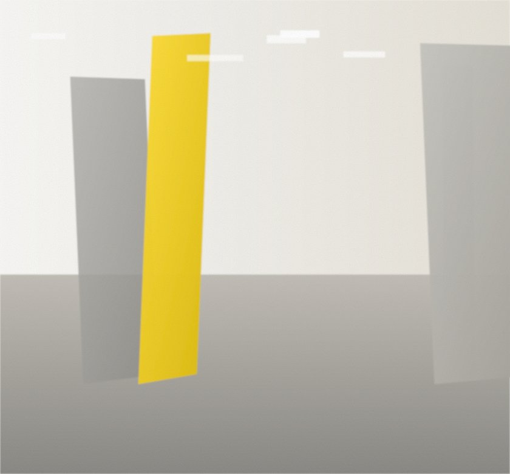
FIG. 04 — 示意图
02 — MEASURED EXPORT
Measure first, then draw.
导出器先让浏览器把每一页排好，再逐个量出元素的位置、尺寸、字号与颜色，按同样的坐标写进 PPTX。
圆角、描边、阴影、旋转与竖排换成 PowerPoint 原生形状；画不出的装饰单独截图，文字始终可编辑。
PRIMITIVES — ROUNDRECT · LINE · CHEVRON · ROTATE · SHADOW · EAVERT
ZIFEIYU PPT SKILL · VOL. 01
07 / 18
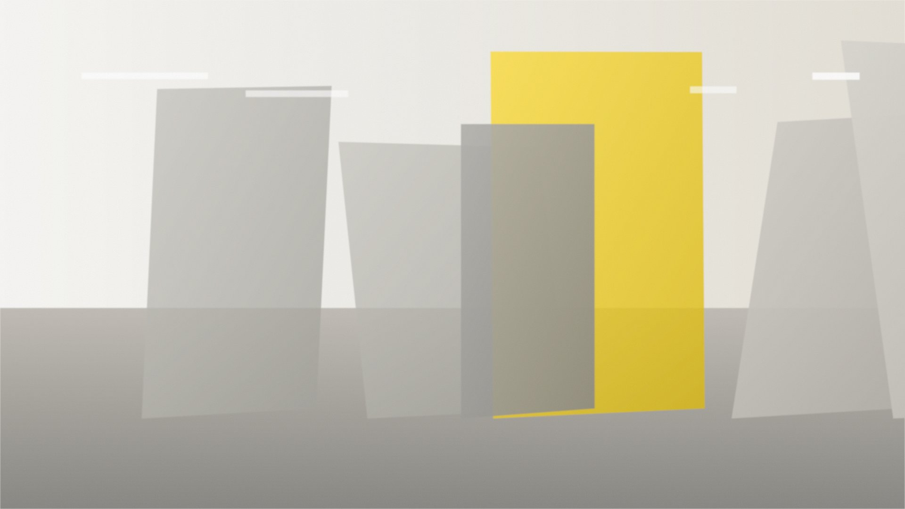
FIG. 05 — 示意图
风格决定版面，版面决定一页能放多少字。
08 / 18
02 — THREE PROMISES
Three promises, all checkable.
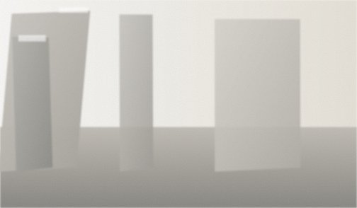
方向键翻页，F 全屏，S 打开演讲者控制台，讲稿只给自己看。
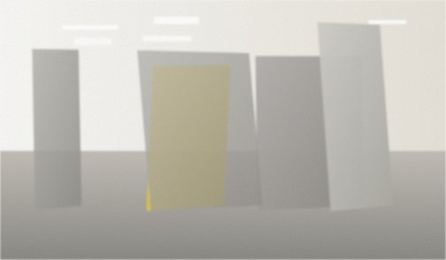
文字是原生文本框，形状是原生形状，交给同事也能接着改。
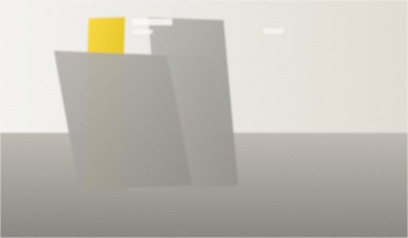
十六条规则查版式、字号、出处与导出一致性，错误清零才交付。
FIG. 06 — 三幅均为示意图
09 / 18
03 — QUALITY GATES
16
条校验规则
R1–R16，从版式注册一路查到 PPTX 导出一致性
FIG. 07 — 示意图
20
页面角色
其中 12 个是每种风格必须覆盖的核心角色
3
导出格式
PPTX · PDF · PNG，HTML 是唯一的源
Source — 本仓库 scripts/validate.mjs · scripts/lib/roles.mjs
10 / 18
03 — RULES BY CONCERN
Sixteen rules, six concerns.
排版与几何
4
R3 · R4 · R7 · R9
版式与样式
4
R1 · R2 · R6 · R12
内容与数据
3
R5 · R8 · R14
可访问与媒体
3
R10 · R11 · R13
节奏
1
R15
导出一致
1
R16
Source — scripts/validate.mjs 规则注释（R1–R16），按守护对象分组
11 / 18
03 — SPEC SHEET
The fine print.
ITEM
SPEC
SOURCE
画布
1280 × 720 px，导出时 px × 0.75 换算为 pt
assets/base.css
字号下限
16 px，溢出先删字、再换版式
validate.mjs · R4
校验规则
R1–R16，错误清零才能交付
validate.mjs
导出格式
PPTX · PDF · PNG，HTML 是唯一的源
SKILL.md
页面角色
20 个，其中 12 个核心角色
lib/roles.mjs
字体
SIL OFL 开源字体，按 deck 用字子集化
fetch-fonts.mjs
Source — 本仓库 SKILL.md · scripts/ · assets/base.css
12 / 18
04 — FILM
FIG. 08 — 示意视频，由抽象图生成
Click to play.
演示时点击画面播放；渲染图、PDF 与 PPTX 的静止画面锁定在封面帧。
0:08 · MP4
ZIFEIYU PPT SKILL · VOL. 01
13 / 18
CHAPTER 02 — WORKFLOW
from outline to deck.
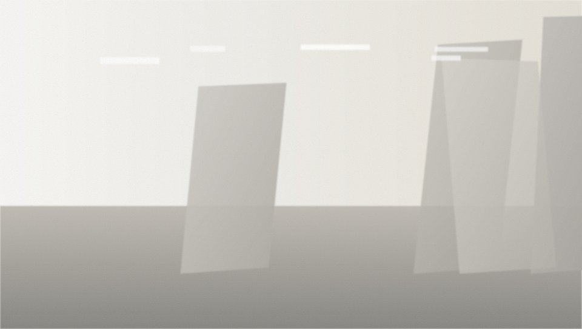
FIG. 09 — 示意图
01
看风格画廊，按场合挑一种，整份 deck 只用这一种。
02
按内容形状找角色，复制版式骨架，只换文字和图片。
03
查类名、字号、出处与导出一致性，错误必须清零。
04
一键得到可编辑 PPTX、矢量 PDF 与逐页 PNG。
ZIFEIYU PPT SKILL · WORKFLOW
14 / 18
04 — CHRONICLE
From one system to a library.
FIG. 10 — 示意图
07.16
07.18
08.17
08.18
10.08
锁定设计系统的网页 PPT，确定性导出。
第二套设计系统：思源宋、暖纸、朱砂。
规则覆盖全部元素，文字分段原生导出。
第三套设计系统，加入数据叙事版式。
十二种风格，版式独立。
Source — git log · 2026-07-16 → 2026-10-08
15 / 18
04 — IMAGERY
Seeded, repeatable, on palette.
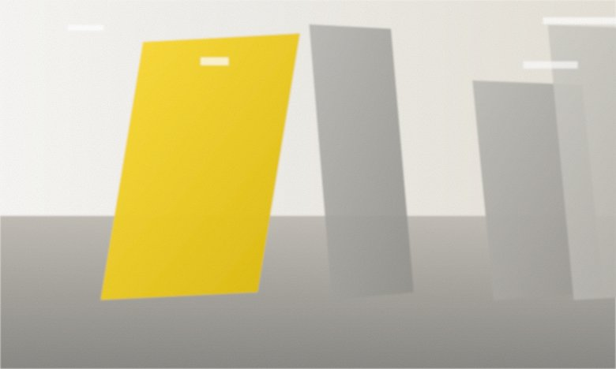
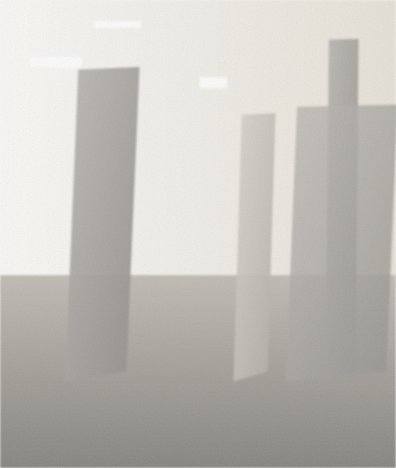
FIG. 11 — 示意图
FIG. 12 — 示意图
FIG. 13 — 示意图
Source — scripts/gen-art.mjs · 固定种子，输出可复现
16 / 18
04 — AUDIO
FIG. 14 — 示意图
Listen while you flip.
音频放在 deck 目录里，演示时点圆点播放；导出 PPTX 后仍能在演示软件里播放。
▶
0:08 · MP3 · 示意素材
0:00 / 0:08
ZIFEIYU PPT SKILL · VOL. 01
17 / 18
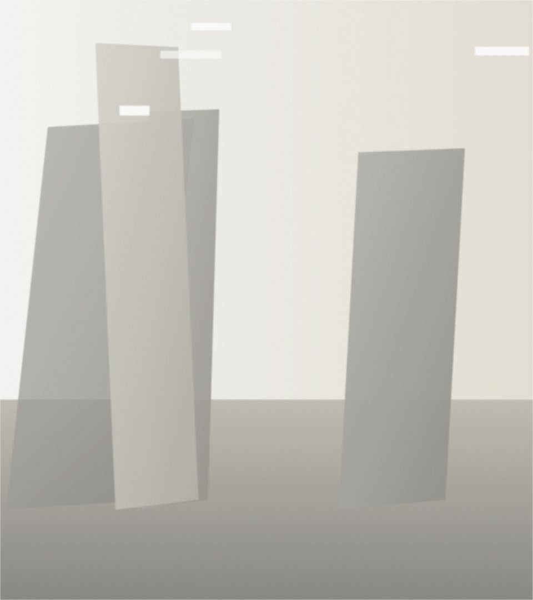
FIG. 15 — 示意图
Thank you.
START — 新建 DECK
node scripts/new-deck.mjs my-deck --style magazine
风格画廊：docs/styles/index.html
VOL. 01 — END
18 / 18